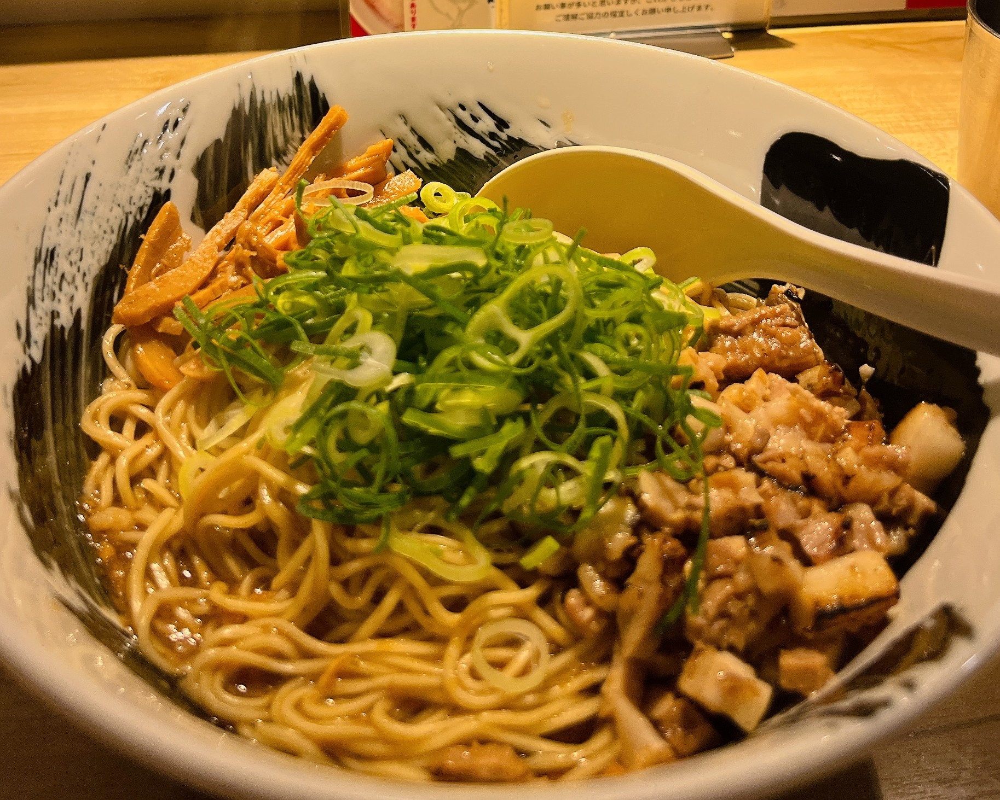

～大阪万博編！～
2025年6月7日に大阪・関西万博を訪れた記事になります！
初めてにしてはかなり色んなパビリオンを回ることができたと思いますので
万博に行かれる際の参考になれば幸いです！
※地図を載せることが規約上不可能なためざっくりとした場所の説明のみとなります！
▶ 今回の旅の目次
魚介豚が最高の相性！麺や佑！

まずは本町駅のラーメン屋さんで魚介豚まぜそばを頂きました！
魚介と豚骨の風味がマッチしておりとても美味しかったです！
締めの追い飯は最高の旨味がご飯に染みており最高でした！麺や佑
営業時間：10:00～15:00 17:00～21:30(月・火・水・木・金・土)
10:00～15:00 17:00～21:00(日)定休日：お盆、年末年始
予約可否：予約不可
駐車場：なし
TEL：06-6563-7893
住所：大阪府大阪市中央区南久宝寺町4-5-15
ニューライフ御堂筋本町 101URL： 食べログで見る
幻想的な世界が楽しめる！ハンガリーパビリオン！
ハンガリーの文化と伝統が楽しめるハンガリーパビリオン！
こちらではハンガリーの民族音楽の生演奏を聴くことができ
幻想的な空間で聴くキレイな歌声はとても感動しました！
場所：Ⓢセービングゾーン(南西エリア)、S16
自然をテーマにした館！スペインパビリオン！
日本の海流である黒潮をモチーフにしたスペインパビリオン！
日本との交流の歴史や日本への航路を知ることができます！
最後にあるショップにはオリーブオイルやワインが売っており
お酒好きや料理好きの方には最高のパビリオンとなっております！場所：Ⓒコネクティングゾーン(北西エリア)、C13
自然、文化、未来が学べる！インドネシアパビリオン！
インドネシアを様々な角度から楽しめるインドネシアパビリオン！
1枚目の写真はインドネシアの自然を表現した森で
2枚目の写真が2045年のインドネシアの風景のジオラマとなります！
更にはインドネシアの武器や絨毯など幅広い文化に触れることができます！場所：Ⓒコネクティングゾーン(北西エリア)、C16
幻想的な砂漠空間！チュニジアパビリオン！
サハラ砂漠を模した空間を楽しめるチュニジアパビリオン！
中はチュニジアを代表するジャスミンの花の香りがふわっと香ります！
アクセサリーやお皿にアラビア語で名前を刻むサービスもあります！場所：Ⓢセービングゾーン(西エリア)、S03
将来の常識を先行体験！未来の都市！
日本の有名企業12社が協賛している未来の都市！
2030年以降のsociety5.0の世界を見て体験することができます！
ロボットとの共存や機械の無人化などの展示物は未来が楽しみになります！場所：Ⓛフューチャーライフゾーン(西ゲートより西側)、L05
人類の団結がテーマ！国連パビリオン！
30以上の国連機関が一致団結して出展する国連パビリオン！
最後のシアターゾーンでは持続可能な未来を体験することができます！場所：Ⓟエンパワーリングゾーン(南西エリア)、P30
フードコートで食事！CRAFTMAN UMAMI!
今回はカレーホットドッグと照り焼きピザを食べました！
かなり大きめのサイズで1つで1食分くらいありました！
味もとても美味しく大満足でした！CRAFTMAN UMAMI 好きやねん大阪フードコート WEST SIDE店
営業時間：10:00～21:00
場所：フューチャーライフゾーン(西ゲートより西側)、
風の広場マーケットプレイス万博に行くなら絶対に見るべき！ガンダム！
万博に行くならガンダムは是非見て頂きたいです”
夜は光の演出もありガンダムをあまり知らない方でも
その格好良さに惚れ惚れします！場所：Ⓦ西ゲートゾーン(西エリア)、W07
-
いかがでしたでしょうか！今回は番外編として万博の記事を書いてみました！
ネットでは色々と言われておりましたが行ってみるととても楽しく
絶対にもう一度は行こうと思えるような内容でした！
人がとても多く人気のパビリオンは待ち時間がとても長いのが欠点ですが
パビリオンの待ち時間をリアルタイムで報告しあうディスコードをうまく活用して
自分的には多くのパビリオンに入れたと思います！
これから万博に行かれる方は是非下記のディスコードに参加して頂きたいです！
ディスコートURL:https://t.co/qWRQcK55Qp
予約も2ヶ月前抽選、7日前抽選、空き枠先着予約、当日登録と様々あるため
次回はもっと準備をして人気のパビリオンにも行きたいと思います！

旅行リスト
旅行リスト


旅行リスト